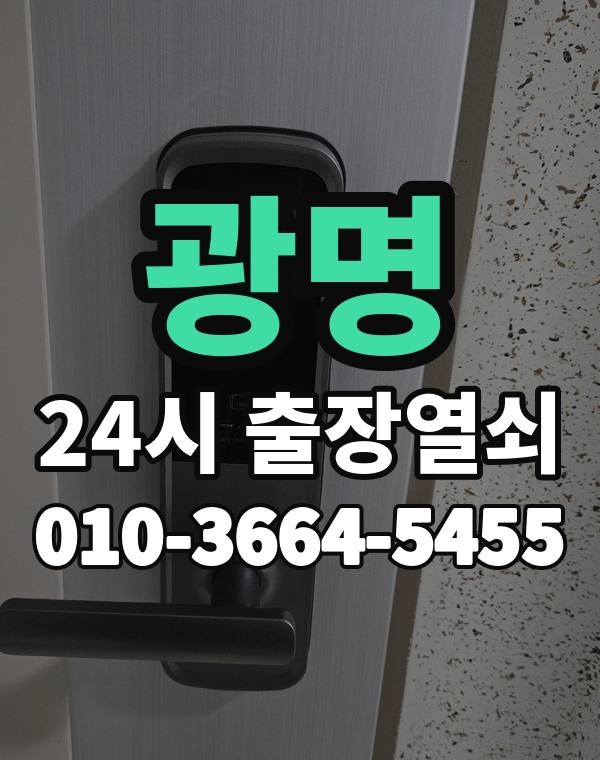

광명 출장열쇠, 이런 동네입니다
광명은 철산, 하안동 대단지 아파트와 광명동 주택가, 일직동 새 아파트가 함께 있는 도시입니다.
철산, 하안동 오래된 단지는 도어락 교체 시기가 된 집이 많습니다.

광명시 출장 가는 동네
- 철산동
- 하안동
- 소하동
- 광명동
- 일직동
- 학온동
철산동 출장열쇠, 하안동 열쇠집처럼 동네 이름으로 찾으셨어도 같은 곳입니다.
적혀 있지 않은 동네도 광명시 안이면 다 갑니다.
광명에서 하는 일
광명 출장, 이렇게 알려주세요
단지 이름과 동, 호수를 알려주시면 바로 찾아갑니다.
광명사거리 쪽 상가 출입문도 출동합니다.
광명역, 철산역, 광명사거리역 근처라고 말씀해 주셔도 위치 잡기가 쉬워집니다.
가까운 역이나 큰 건물, 단지 이름을 같이 알려주세요.
- 주소와 건물 이름 (아파트면 동, 호수)
- 문 종류, 번호판이 켜지는지
- 사시는 걸 확인할 신분증이나 우편물이 있는지
전화부터 작업까지 순서는 이용안내에 적어 두었습니다.
광명 출장열쇠 관련 글
- 광명 철산동 도어락 교체 전에 확인할 것 비용은 이렇게 안내합니다
- 광명 광명동 임대인 임차인이 도어락 문제 정리할 때 확인할 것
- 광명 하안동 도어락 비밀번호 바꾸는 시기와 가족이 같이 쓰는 관리법
- 광명 학온동 한파에 도어락이 느리거나 꺼질 때 대처법
- 광명 일직동 도어락 알림 앱 연동이 안 될 때 확인할 것
- 광명 소하동 상가 사무실 문이 안 열릴 때 출장열쇠 부르는 순서
광명 출장열쇠 자주 묻는 질문
광명 어느 동네까지 오시나요?
철산동, 하안동, 소하동, 광명동, 일직동, 학온동 등 광명시 전 지역 갑니다. 광명시 안이라면 동네 상관없이 갑니다.
새벽에 광명에서 전화해도 되나요?
밤이든 새벽이든 받습니다. 어디인지 들으면 언제쯤 도착하는지 바로 말씀드립니다.
개방에 실패해도 비용이 나오나요?
못 열면 비용은 받지 않습니다. 비용은 작업 전에 먼저 말씀드리고, 괜찮다고 하시면 시작합니다.
본인 확인은 어떻게 하나요?
거주하시는 분인지 확인한 뒤 엽니다. 신분증이 집 안에 있으면 관리사무소 확인도 됩니다.
광명 도어락 새로 다는 것도 되나요?
네, 문 열기와 함께 도어락 수리, 설치, 교체도 합니다. 고쳐서 되면 교체는 권하지 않습니다.